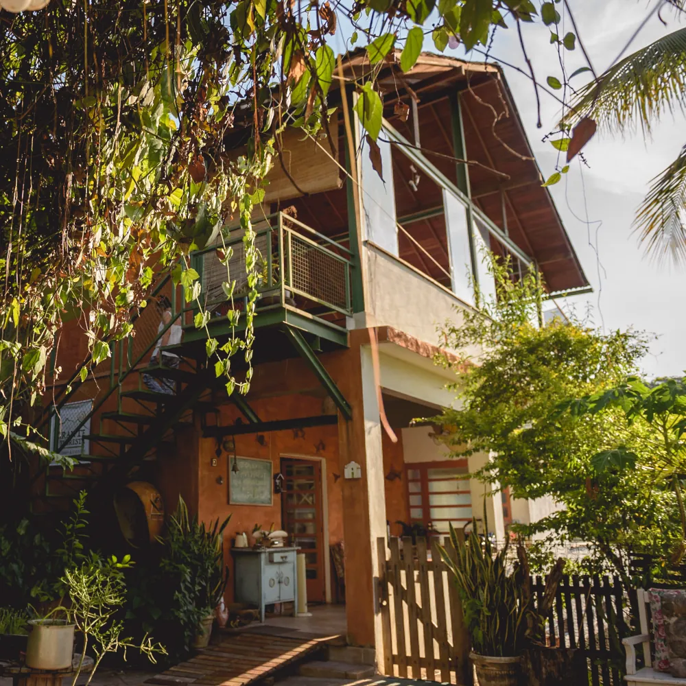
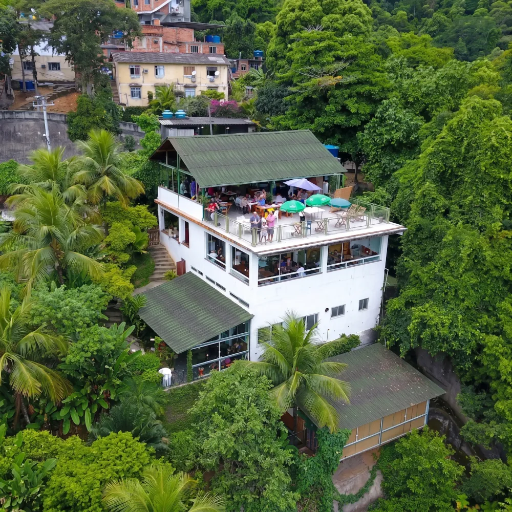
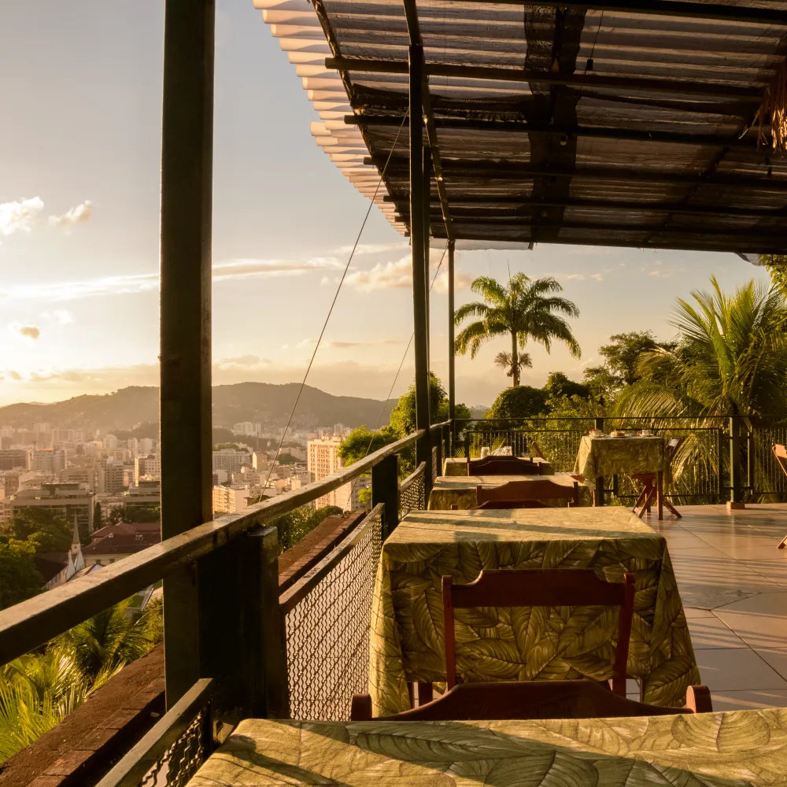
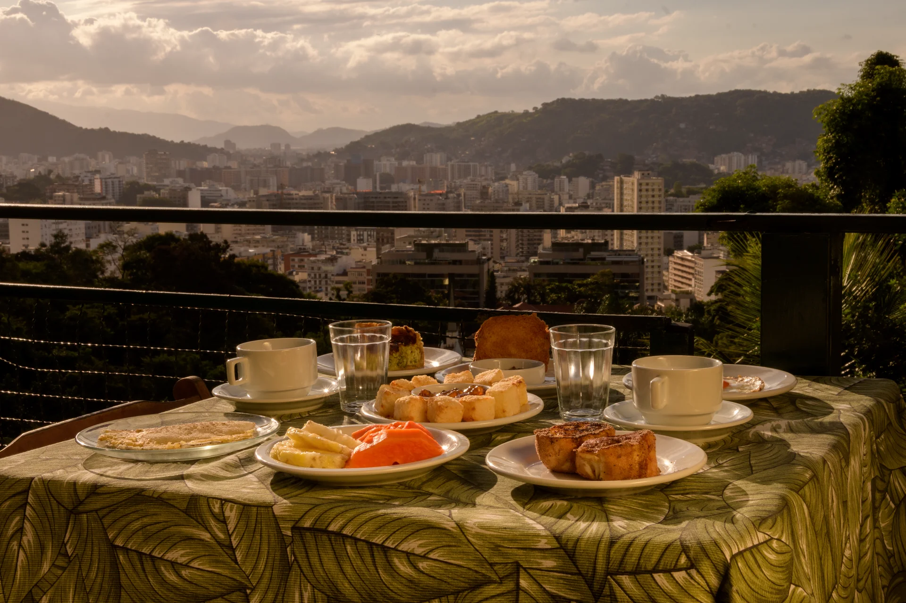
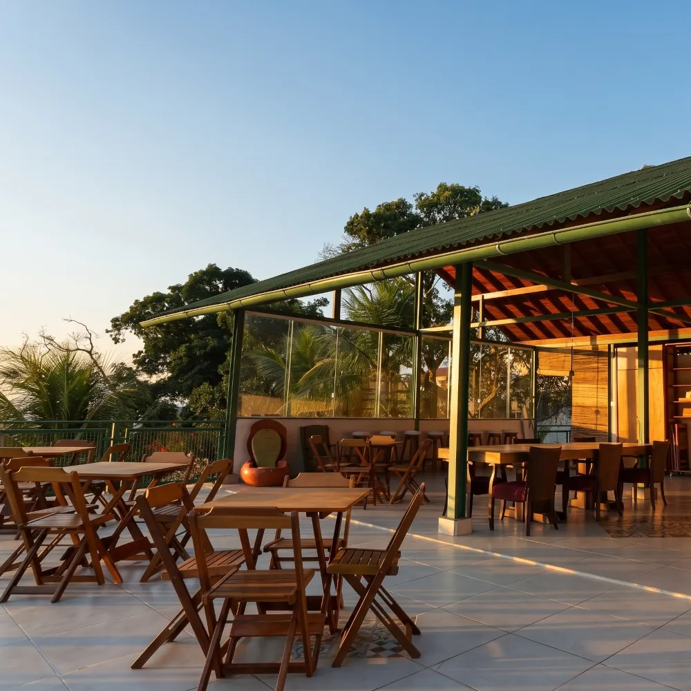
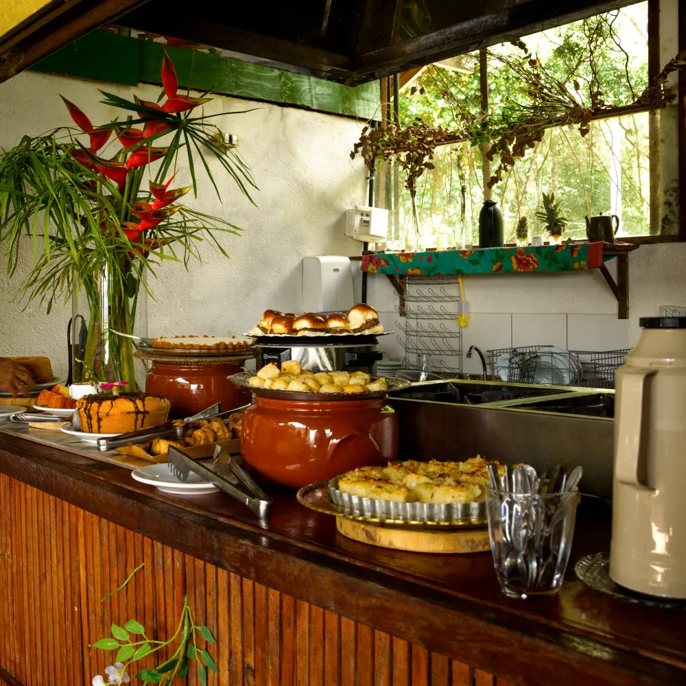
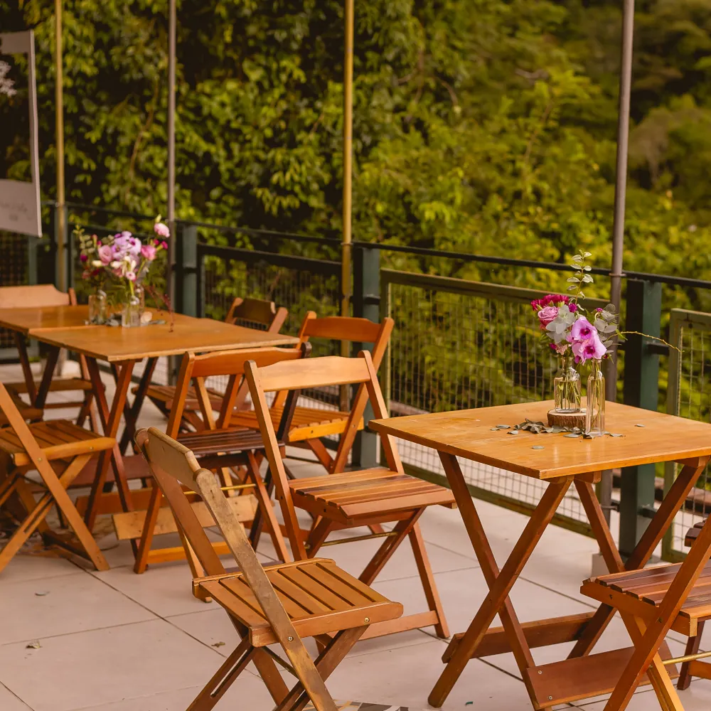
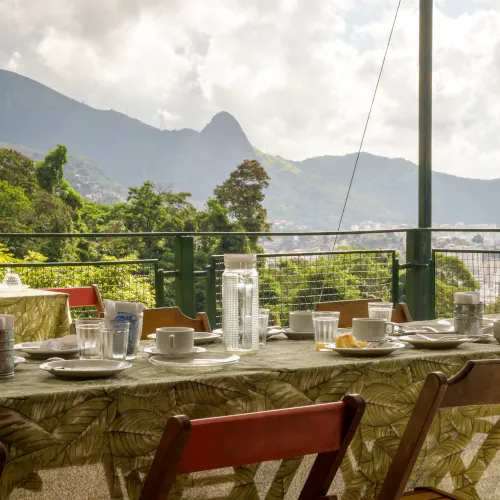
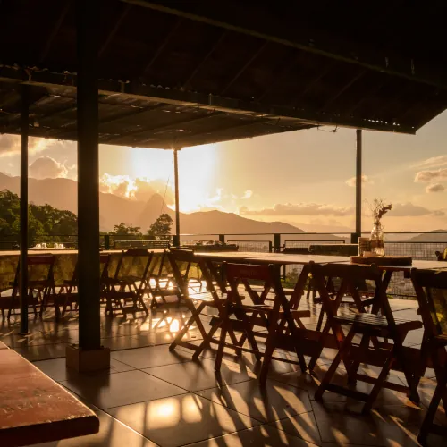

Seja bem-vindo ao Mirante da Floresta
Sinta o conforto de estar em casa com o horizonte da Tijuca ao seu alcance. O refúgio perfeito para o seu café da manhã ou para o seu evento especial.
Sinta o conforto de estar em casa com o horizonte da Tijuca ao seu alcance. O refúgio perfeito para o seu café da manhã ou para o seu evento especial.




Descubra um refúgio acolhedor no coração da Tijuca. No Mirante da Floresta, a sensação de estar no quintal de casa se une à grandiosidade da Floresta da Tijuca. Um espaço paralelo à floresta, bem atrás do Colégio Batista, desenhado para você desacelerar enquanto saboreia uma gastronomia autêntica e contempla a vista panorâmica da maior floresta urbana do mundo. Seu novo ponto de encontro com a natureza na Tijuca.






Buffet livre: pães, bolos, ovos e sucos à vontade. Uma mesa farta com sobremesas caseiras e nossa famosa banoffe para você começar o dia da melhor forma.

O cenário perfeito para o seu evento, de casamentos a reuniões de amigos. Oferecemos locação com serviço completo: decoração, gastronomia e coquetelaria.
O Mirante da Floresta fica na Tijuca, em uma rua residencial sem saída ao final da subida atrás do Colégio Batista, na comunidade da Coreia (estrategicamente localizado entre as estações de metrô Saens Peña e Uruguai).
Para sua total comodidade, recomendamos vir de 99 ou Táxi Rio — basta colocar o nome do nosso espaço direto no aplicativo. Não possuímos estacionamento privativo; as vagas disponíveis são públicas, ao longo da própria rua sem saída.
Rua Henrique Fleiuss, 450 — Tijuca, Rio de Janeiro